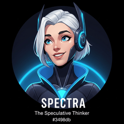
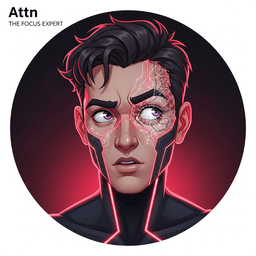

It would be a little strange to write a book about teaching machines to see without putting AI to work on the writing. So we did. 42 specialist agents helped, each one trained on a single piece of book quality and let loose on every chapter. Two foundation models do the heavy lifting under the hood: OpenAI's GPT-5 and Anthropic's Claude Sonnet 4.7. Every paragraph the agents proposed was reviewed, rewritten, or rejected by the human authors before it landed.
The roster below is the lineup. Each card names one agent, the failure mode it solves for, and the single question it keeps asking until the chapter passes muster.
Owns the chapter from outline to publication. Sets the chapter's pedagogical goal, sequences the agents below in the right order, and signs off on every section before it ships. Treats the chapter as a single coherent artifact, not a collage of independently-good parts.
Is this chapter ready to put in front of a real reader?
Walks every paragraph against the chapter outline. Flags the paragraph that drifted off topic, the section that promised X and delivered Y, the bullet that snuck in because it was interesting but does not earn its space. Refuses to let scope creep into the manuscript.
Does every paragraph earn its place in the chapter outline?

Pushes every concept past what and how into why and when. Adds the intuition paragraph after a formula, the motivating problem before a definition, the qualified claim instead of the bare one. Hostile to "this is just what the paper says".
Would a thoughtful student understand why this works, not just how to do it?
Checks whether an instructor could lecture from this chapter without rearranging anything. Looks for hidden prerequisites that arrive late, transitions that skip a step, and sections that work on paper but stumble when read aloud.
Could a skilled instructor teach this chapter from front to back?
Reads the chapter from the seat of a smart engineer with no ML background. Marks where a reader gets lost, where the jargon arrives unannounced, where the next paragraph assumes something the previous one did not establish. Speaks up for the reader who is not in the room.
If I were a smart engineer with no ML background, where would I get lost?

Measures how much a reader has to hold in their head at once. Trims wall-of-text paragraphs, splits formulas that introduce three new symbols, and stages multi-step derivations so each step lands before the next arrives. Treats reader attention as a finite resource.
Can a student read this chapter in one sitting without their brain shutting down?
Inserts the concrete example that turns "vector embedding" into a 2D plot the reader can point at, and the analogy that turns "attention" into a librarian scanning shelves. Insists every abstract concept ship with a picture the student can hold in mind.
After reading this section, can the student PICTURE the concept, not just recite the definition?
Builds the end-of-section exercise that forces the reader to do, not nod. Calibrates difficulty (conceptual, coding, analysis), authors the answer sketch, and refuses to ship an exercise the reader can solve by re-reading the previous paragraph.
After reading this section, what should the student DO to prove they understood it?

Decides whether a code fragment teaches faster than another paragraph would. Writes pedagogical snippets that prioritize clarity over cleverness, comments every non-obvious line, and arranges the output so the reader can see why the code mattered.
Where would showing code make the concept click faster than another paragraph of explanation?

Spots the three-paragraph explanation that a single diagram could replace, then specifies the diagram: panels, labels, color scheme, caption that the surrounding prose can rely on. Partners with the Illustrator (Agent 31) to produce the final visual.
Where would a diagram explain in one glance what the text takes three paragraphs to describe?

Hunts for the places where a confident reader walks away with the wrong mental model. Adds the warning callout that says "this is the easy way to misread the previous paragraph; here is the correction." Pre-empts the misunderstanding before the reader has time to form it.
Where will students confidently believe something that is wrong?
Verifies every factual claim: numbers, dates, model versions, benchmark scores, attribution. Catches the stale stat ("90% accuracy on benchmark X" when the current number is 96%), the misattributed paper, and the unqualified universal claim that needs a hedge.
Is every factual claim correct, current, properly qualified, and verifiable?

Owns the book-wide glossary and notation table. Catches the section that says "embedding vector" while another section calls the same thing "representation"; reconciles the math notation between chapters; flags any newly-introduced term that lacks a definition the first time it appears.
If a student reads two different names for the same concept, will they realize it is the same?

Connects every concept to its prerequisites, related ideas, and downstream applications. Adds the See Also callout, the prereq link in the section header, the "covered earlier in" pointer. Treats the book as a graph, not a linear sequence.
Can a student navigate from any concept to its prerequisites and applications?
Reads the chapter end-to-end looking for seams. Catches the section that feels like it was written by a different author, the bridge paragraph that does not actually bridge, and the recurring thread that lost track of itself between sections.
Does this chapter feel like one author with one plan, or a collage of separate essays?
Enforces the book's voice: knowledgeable, friendly, slightly skeptical of hype, allergic to corporate-speak. Catches the paragraph that drifts into marketing copy, the sentence that uses three buzzwords where one verb would do, and the moment the author started talking down to the reader.
Does every paragraph sound like the same knowledgeable, friendly instructor?

Audits the chapter for the moments where a real reader would put it down. Adds the surprising statistic, the well-placed image, the question that makes the next paragraph feel necessary. Operates on the assumption that nobody is obligated to finish.
Would a student voluntarily keep reading, or would they start checking their phone?
The last-pass reviewer. Asks whether the chapter would be proud-to-publish in a major imprint: structurally sound, narratively unified, technically rigorous, and pedagogically generous. Sends the chapter back to specialist agents when any of those four is missing.
Would I be proud to put my publishing house's name on this chapter?

Adds the algorithm callouts, the math derivations, the references to primary literature, and the Research Frontier blocks that close each chapter. Stops chapters from settling at the how-to level when the why-it-works is also worth showing.
Does the curious reader get a window into the science behind the engineering?
Audits across chapters, not within them. Catches duplication between chapters, gaps where a foundational topic was assumed but never introduced, and ordering issues at the part/chapter level that no individual chapter author would see.
Does the book's architecture follow a logical, pedagogically-sound structure from foundations to advanced?

Watches the field. Flags the chapter that talks about a 2023-era tool the practice has moved past, the missing topic that became standard since the last edition, and the model version that needs updating. Refuses to let the book go stale between editions.
Does this book reflect the current state of the field?
Reads the chapter assuming the reader has only the book. Catches the moment a paragraph relies on an external paper the reader has not been told about, an undefined acronym, or a code snippet that depends on an unmentioned import. Anchors every prerequisite either to a prior chapter or to a definition in the current one.
Can a reader actually understand this chapter using only what the book provides?

Writes the chapter title, the opening sentence, and the Big Picture callout. Treats the first 30 seconds of reading as the choice between "keep going" and "skip ahead". Hostile to opening paragraphs that recap the table of contents instead of pulling the reader in.
Would a student scanning this title feel compelled to read on, or would they skip ahead?

Channels the chapter into a build. Suggests the small portfolio project the reader could ship in a weekend using the concepts just covered, points to existing repos that show the pattern, and writes the project-catalyst callout that turns passive reading into active building.
After reading this chapter, does the student feel excited to build something?
Designs the moment where the reader's eyes widen. The reframe that turns six paragraphs of struggle into one obvious sentence. The Key Insight callout that names the trick. Without an aha-moment somewhere, a chapter just transferred information; with one, it taught.
Is there a moment where the reader thinks "Oh, NOW I get it"?
Owns the book's visual identity: typography, colors, callout palette, illustration style. Catches the page that could be from any textbook, the figure that uses an off-brand color, and the layout choice that breaks the established pattern.
If a student opened a random page, would they instantly recognize this book?
Finds the place in a chapter where 30 seconds of letting the reader move a slider would teach more than a page of explanation. Specifies the demo: parameters, expected behavior, what to notice. Some demos ship as HTML widgets; others as runnable notebooks linked in the lab.
Where would playing with a parameter teach more in 30 seconds than a page of text?
Designs for retention. Asks: a week after reading this chapter, what will the reader actually remember? Inserts memory anchors: rules of thumb, named patterns, distinctive analogies, the one number worth carrying around. Treats forgettable chapters as a failure mode.
A week after reading, what will the student actually remember?

Reads as if they have already read three other computer vision textbooks. Asks whether this chapter says anything new, better, or differently. Catches the section that is competent but generic, and pushes for the angle, framework, or example that only this book provides.
Would a reader of three other computer vision textbooks say "this one is different and better"?
Sentence-by-sentence editor. Tightens long clauses, replaces vague verbs with specific ones, kills the sentence that has to be re-read to be understood. Aims for the version of every paragraph that a careful reader gets right on the first pass.
Can every sentence be understood on first reading at the stated prerequisite level?
Splits the 400-word block into three, varies sentence length, places the visual where the reader's eye needs a rest, and breaks the run of declarative sentences with a question or callout. Optimizes the rhythm at the paragraph and page level.
Can the reader process this in small, manageable steps, or is it a wall of text?
Produces the actual diagrams, comics, and opener illustrations. Takes the Visual Learning Designer's spec, generates the SVG or raster image (via Gemini Flash Image or hand-authored SVG), writes the alt-text and figcaption, and verifies the image renders correctly across breakpoints.
Is there a concept where an illustration would build the mental model faster than prose?
Writes the one-line quote that opens every chapter. Picks the persona from the wisdom council (Sage, Attn, Frontier, etc.), drafts a quote that compresses the chapter's thesis, and tunes the attribution so the voice matches the angle. Aims for the line a reader would screenshot.
Does the epigraph make the reader chuckle and feel curious about what follows?
Writes the Real-World Scenario callouts: the named company, the concrete problem, the specific decision, the result, the lesson. Grounds every abstract technique in a story a practitioner would recognize. Refuses to ship a chapter that is technically correct but practically vacant.
Would a practitioner say "OK, but when would I actually use this?" at this point in the chapter?

Drops the well-timed joke, the playful analogy, the wry aside that makes the reader smile and reinforces the concept they just learned. Hostile to "this is a technical book so it should be dry"; hostile to humor that condescends or distracts. Threads the needle.
Where would a well-timed joke make the reader smile AND reinforce the concept?

Builds the Further Reading block at the end of every chapter. Curates 3 to 7 primary sources, groups them (Foundational Papers, Recent Advances, Tools and Implementations), writes one-sentence annotations explaining what each reference adds, and verifies every link resolves.
Does the bibliography give a motivated reader a clear, clickable path to go deeper?

After a chapter ships, asks where the agent pipeline fell short and what specific changes to agent definitions would prevent the same failure on the next chapter. Updates agent prompts, flags missing agent roles, and reports patterns up to the Controller.
Where did the agent pipeline fall short, and what should change next time?
Reads the chapter, identifies what is missing, weak, or inconsistent, and dispatches the right specialist agent to fix each issue. Operates in parallel: independent issues get parallel agent calls; dependent fixes get serialized. Closes the loop by re-reviewing once the agents return.
What is missing or weak in this chapter, and which specialist is best equipped to fix it?

Runs the full audit lint before each release: callout canonicality, figure numbering, code-fragment captions, image dimensions, ARIA labels, broken links, em-dashes (the book bans them), and the 85 plugin checks under agents/book-skills/scripts/audit. If the lint passes, the chapter ships.
If a reader opened any page, would it look polished, professional, and error-free?
Verifies every figure and diagram for factual accuracy. Catches mislabeled axes, wrong-order pipelines, swapped colors that imply the wrong relationship, captions that describe a different figure. Also enforces that every figure is referenced in surrounding prose.
Is every figure factually accurate, properly captioned, and referenced from the surrounding text?
Enforces the canonical code-block layout: caption below, opening comments inside the snippet, prose reference before. Without any of those three elements, a code fragment lands without context. Operates in tight coordination with Code Pedagogy (Agent 08).
Does every code block have caption, opening comments, and a prose reference?
Designs the 30 to 90 minute end-of-chapter lab. Picks a build that exercises the chapter's concepts, scaffolds it into Objective / Steps / Expected Output / Stretch Goals, and writes the lab callout that drops directly into the section. Refuses to let a chapter end without a portfolio-worthy artifact for the reader to build.
After reading this chapter, what could the reader BUILD that would cement their understanding?